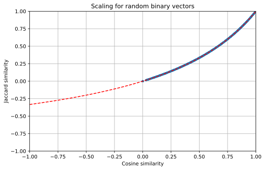

Document similarity¶
A number of algorithms in FreeDiscovery require computing similarity between documents, including Nearest Neighbors categorization, search and clustering.
1. TF-IDF weighting schemes¶
FreeDiscovery supports a large range of TF-IDF weighting schemes via the weighting=”xxx” parameter, that follows the SMART Information Retrieval System notation,
| Term frequency | Document frequency | Normalization |
| n (natural): \({{\text{tf}}_{t,d}}\) | n (no): 1 | n (none): 1 |
| l (logarithm): \(1+log({\displaystyle {\text{tf}}_{t,d}})\) | t (idf): \(log{\displaystyle {\tfrac {N}{df_{t}}}}\) | c (cosine): \({\displaystyle ||V_{\textbf{d}}||_2 = {\sqrt {w_{1}^{2}+...+w_{M}^{2}}}}\) |
| a (augmented): \(0.5 + {\displaystyle {\tfrac {0.5\times {\text{tf}}_{t,d}}{{\text{max(tf}}_{t,d})}}}\) | p (prob idf): \({\displaystyle {\text{log}}{\tfrac {N-df_{t}}{df_{t}}}}\) | p (pivoted cosine): \({\displaystyle (1 - \alpha) \textbf{avg} \left( ||V_{\textbf{d}}||_2 \right) + \alpha ||V_{\textbf{d}}||_2}\) |
| b (boolean): \({\displaystyle {\begin{cases}1,&{\text{if tf}}_{t,d}>0\\0,&{\text{otherwise}}\end{cases}}}\) | u (pivoted unique): \({\displaystyle (1 - \alpha) \textbf{avg} \left( u_{\textbf{d}} \right)+ \alpha u_{\textbf{d}}}\) |
|
| L (log average): \({\displaystyle {\tfrac {1+{\text{log}}({\text{tf}}_{t,d})}{1+{\text{log}}({\text{avg}}_{t\epsilon d}({\text{tf}}_{t,d}))}}}\) |
2. Example of term weighting¶
To illustrate the difference between these metrics on a more practical example, we can consider two documents,
- document
Aconsisting of words"legal documents prodedure case" - document
Bconsisting of words"legal documents"
A more detailed description of different metrics can be found below,
cosinemetric computes to the cosine similarity score. This metric is always internally used by FreeDiscovery. For vectorized documents with positive term frequencies the cosine similarity is in the[0, 1]range, however in general (in the LSI space and with hashed feature extraction) the domain of definition is[-1, 1].cosine_similarity(A, B) = 0.71.jaccardmetric, aims to scale the cosine similarity in a way to approximately match the results of Jaccard similarity,\[S_jaccard = \frac{S_{cosine]}{2 - S_{cosine}}\]For positive vectors, the results are in the
[0, 1]range, or in general in the[-1/3, 1]range.jaccard_similarity(A, B) = 0.54. Note: the exact jaccard similarity in this case is0.5.